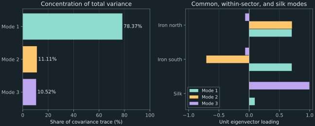

5. Covariance and the geometry of risk
Splitting wealth between two risky assets does not automatically lower risk below that of the safer asset. In the running example, equal weights have return variance 0.02, exactly the variance of the second asset alone. Changing the first weight to 0.25 lowers portfolio variance to 0.0175. The missing information is how the two returns move together. Covariance supplies that information, and its matrix structure explains which combinations amplify or cancel uncertainty.
The chapter starts with two assets, derives the portfolio-risk formula, and then studies its many-asset geometry. An explicit three-asset teaching matrix separates common movement, within-sector differences, and a more distinct third asset. Eigenvectors reveal those directions; they do not by themselves select a feasible investment or identify an economic cause. Numerical checks will also distinguish a valid covariance matrix from a collection of individually plausible pairwise entries.
Source spine: covariance and matrix operations, eigenvalues and risk directions, and the covariance/spectral portions of the second-week workshop, playlist positions 13, 15, and 17. The workshop's return-vector and linear-constraint calculations appear in chapter 4. Complete proofs, statistical counterexamples, sample-matrix diagnostics, and the explicitly specified sector matrix are teaching constructions. Computed values come from the chapter program.
5.1 Measure joint deviations, then state what that measure leaves out Recording 13, 1:10
Let $R_1$ and $R_2$ be random simple returns over the same holding period, with finite second moments. Define their means $\mu_i=\mathbb E[R_i]$, centered returns $X_i=R_i-\mu_i$, variances $\sigma_i^2=\mathbb E[X_i^2]$, and nonnegative standard deviations $\sigma_i=\sqrt{\sigma_i^2}$ for $i=1,2$. All returns use decimal-fraction units. Centering removes the average so that joint variation can be studied separately from the expected-return objective.
The covariance is the expectation of the product of centered returns:
\[ \sigma_{12}=\operatorname{Cov}(R_1,R_2) =\mathbb E[X_1X_2] =\mathbb E[R_1R_2]-\mu_1\mu_2. \tag{5.1} \]The last equality follows by expanding $(R_1-\mu_1)(R_2-\mu_2)$ and using $\mathbb E[R_i]=\mu_i$. Interchanging the two scalar factors leaves their product unchanged, so $\sigma_{12}=\sigma_{21}$. Covariance has squared-return units. It measures a weighted average of joint deviations, rather than a proportion of dates when two assets move in the same direction.
If both standard deviations are positive, define the dimensionless correlation by
\[ \rho_{12}=\frac{\sigma_{12}}{\sigma_1\sigma_2}. \tag{5.2} \]For the running variances 0.04 and 0.02 and covariance 0.01, this gives correlation approximately 0.353553391. The denominator uses standard deviations, not variances. That distinction matters both numerically and dimensionally: the product of two standard deviations has the same units as covariance, so the quotient is unitless.
Why must correlation lie between minus one and one?
For any real number $a$, the square $(X_1-aX_2)^2$ is nonnegative. Its expectation is therefore nonnegative. Expanding and taking expectations gives $\sigma_1^2-2a\sigma_{12}+a^2\sigma_2^2\ge0$. When $\sigma_2\gt0$, choose $a=\sigma_{12}/\sigma_2^2$ to minimize that quadratic. Substitution yields
\[ \sigma_{12}^2\le\sigma_1^2\sigma_2^2, \qquad |\rho_{12}|\le1 \quad\text{when }\sigma_1\sigma_2\gt0. \tag{5.3} \]If one variance is zero, its centered return is zero almost surely, meaning outside an event of probability zero. To justify that conclusion, a positive probability of a deviation larger in magnitude than some $\varepsilon\gt0$ would force its expected square to be at least $\varepsilon^2$ times that positive probability. Zero expected square rules out every such event. Covariance with any finite-second-moment return is then zero. Correlation is undefined in that case because its denominator vanishes; assigning zero correlation would add a convention to the mathematical definition.
With $\sigma_2\gt0$, equality in (5.3) occurs when $X_1-aX_2$ has zero variance for the minimizing coefficient, so the centered returns are exactly linearly related almost surely. Correlation measures that linear relationship when both standard deviations are positive. It need not describe a nonlinear dependence, and it does not determine the full joint distribution.
Zero covariance does not establish independence
As an original probability example, let $X$ take values $-1,0,1$ with equal probabilities and set $Y=X^2$. Then $\mathbb E[X]=0$, $\mathbb E[Y]=2/3$, and $\mathbb E[XY]=\mathbb E[X^3]=0$, giving covariance zero. Nevertheless, knowing $X=0$ determines $Y=0$, while $Y$ is not always zero. Thus the variables are dependent despite being uncorrelated. The values here illustrate a probability mechanism, rather than a proposed set of unlevered stock returns.
Independence with finite second moments implies zero covariance because the expectation of a product factors into the product of expectations. The example disproves the converse. Interpreting a near-zero measured correlation as proof of economic or statistical independence would therefore require information beyond that one number.
Negative covariance is not a guarantee of an offsetting gain
Consider another original three-scenario return model. Give each row probability one third:
| Scenario | First return | Second return |
|---|---|---|
| 1 | −0.10 | −0.10 |
| 2 | +0.10 | −0.20 |
| 3 | 0 | +0.30 |
Both means are zero. The mean product is $[0.01-0.02+0]/3=-1/300$, so covariance is approximately $-0.003333333333$. Yet both assets lose money in scenario 1, an event of probability one third. Negative covariance describes an average joint-deviation relation; it does not promise that one asset rises whenever the other falls. Using it as evidence of risk reduction requires the actual portfolio-variance calculation, and protection against every scenario is a different requirement.
Actual correlations can vary with the observation window, sampling convention, and market regime. The chapter does not assume any fixed present-day relationship between named sectors, gold, or stock indices. The following computations use specified matrices so that the mathematical conclusions can be assessed independently of an unprovided market dataset.
5.2 Expand the portfolio variance before abbreviating it Recording 13, 11:19
For $n$ assets, collect centered returns into $\mathbf X=(X_1,\ldots,X_n)^T$ and define the covariance matrix $\Sigma$ by entries $\Sigma_{ij}=\mathbb E[X_iX_j]$. Its diagonal entries are variances; its off-diagonal entries are covariances. It is symmetric because $\mathbb E[X_iX_j]=\mathbb E[X_jX_i]$. Fix a real weight vector $\mathbf w$ before the uncertain returns are realized. Under the same one-period holding assumptions as chapter 4, the centered portfolio return is $\mathbf w^T\mathbf X$.
Squaring the finite sum and taking expectations gives
\[ \operatorname{Var}(R_p) =\mathbb E\!\left[\left(\sum_iw_iX_i\right)^2\right] =\sum_{i=1}^{n}\sum_{j=1}^{n}w_iw_j\Sigma_{ij} =\mathbf w^T\Sigma\mathbf w. \tag{5.4} \]This scalar is a quadratic form, meaning the same vector appears on both sides of a matrix. The dimensions are $(1\times n)(n\times n)(n\times1)$, producing a $1\times1$ result. The identity holds for arbitrary fixed real weights, including hedge positions whose weights sum to zero. A budget or long-only constraint defines which of those vectors are feasible investments, separately from the variance identity.
For two assets, (5.4) expands to
\[ \operatorname{Var}(R_p)=w_1^2\sigma_1^2+w_2^2\sigma_2^2 +2w_1w_2\sigma_{12}. \tag{5.5} \]The factor two comes from the distinct index pairs $(1,2)$ and $(2,1)$. Symmetry makes their covariances equal, so their contributions combine. Omitting one cross term understates or overstates risk according to its sign. Replacing covariance by correlation without multiplying by the two standard deviations also changes the formula.
Positive covariance still permits useful diversification
Use the source's two-asset matrix
\[ \Sigma=\begin{pmatrix}0.04&0.01\\0.01&0.02\end{pmatrix}. \tag{5.6} \]At equal weights, (5.5) gives $0.25(0.04)+0.25(0.02)+2(0.25)(0.01)=0.02$. Its standard deviation is approximately 0.141421356237, equal to that of the second asset by itself. Equal weighting therefore has not reduced variance below that particular asset's variance, even though it is below the first asset's variance.
To choose the least-variance long-only mixture, set $a=w_1$ and $w_2=1-a$ with $0\le a\le1$. Substitution gives
\[ V(a)=0.04a^2+0.02(1-a)^2+0.02a(1-a) =0.04a^2-0.02a+0.02. \tag{5.7} \]Here $V(a)$ denotes the portfolio variance. Its derivative is $0.08a-0.02$ and its second derivative is 0.08. The unique unconstrained minimum is $a=0.25$, which lies inside the permitted interval. Its variance is 0.0175 and its standard deviation approximately 0.132287565553. Thus a suitable mixture improves on either individual variance despite positive covariance. Negative correlation is not required for diversification; the magnitude of joint variation and the chosen weights determine the result.
This calculation compares risk without an expected-return target. The selected mixture might not satisfy a specified target or preference once means are added. Chapter 4 demonstrated why constraints and objectives are separate inputs. The fact that variance can be reduced does not establish that this is the correct allocation for every investor.
Unit conversion squares the covariance scale
If returns are converted from decimal fractions to percentage-point units, each centered return is multiplied by 100. Therefore each covariance is multiplied by $100^2=10{,}000$. A standard deviation is multiplied by 100, while correlation is unchanged because its numerator and denominator receive the same squared scale. For example, a decimal-return variance of 0.04 corresponds to standard deviation 0.20, or 20 percentage points, and variance 400 in squared percentage-point units.
Keeping a variance coefficient at 0.04 while converting the return data to percentage-point units would define a different covariance model. Describing diagonal entries as ordinary percentage returns obscures this distinction. Covariance entries require the units of the return variables and their product, not just a percent sign attached to a number.
Matrix multiplication implements the contraction of indices
To evaluate (5.4), first form $\mathbf y=\Sigma\mathbf w$, whose $i$th component is $\sum_j\Sigma_{ij}w_j$, and then compute $\mathbf w^T\mathbf y$. For a dense matrix, these operations involve a double sum and have $O(n^2)$ work under fixed-size arithmetic. The formula remains concise as the number of assets grows, while its work still increases.
In NumPy, @ expresses matrix multiplication and * expresses elementwise multiplication with its broadcasting rules. Elementwise operations can yield a plausible-looking array without calculating the quadratic form. R similarly distinguishes its matrix-product operator from elementwise arithmetic, whose shorter-vector recycling can matter. A reliable implementation checks shapes and verifies a small expanded calculation before relying on compact notation. The companion compares the two-asset result with exact rational arithmetic and later checks a three-asset form through its eigenbasis.
5.3 Nonnegative variance constrains the whole matrix Recording 15, 10:37
A covariance matrix cannot be an arbitrary symmetric table of numbers. For any real vector $\mathbf u$, its quadratic form is
\[ \mathbf u^T\Sigma\mathbf u =\mathbb E[(\mathbf u^T\mathbf X)^2]\ge0. \tag{5.8} \]A real symmetric matrix satisfying this inequality for every vector is called positive semidefinite. If the inequality is strict for every nonzero vector, it is positive definite. Equation (5.8) proves positive semidefiniteness for every covariance matrix under the finite-second-moment assumptions. It checks all combinations, including short positions, rather than only a selected list of long-only portfolios.
The running two-asset matrix is positive definite. For an arbitrary vector $(u_1,u_2)^T$, completing the square gives $0.04(u_1+0.25u_2)^2+0.0175u_2^2$. This is positive unless both components vanish. A zero-variance combination would instead make $\mathbf u^T\mathbf X$ zero almost surely. Such a relation can describe redundant return exposures; it need not be a fully invested portfolio because the components of $\mathbf u$ need not sum to one.
Valid-looking pairs need not make a valid joint matrix
Nonnegative diagonal entries and correlations between minus one and one are necessary conditions, but for three assets they are not sufficient. Consider the following proposed unit-variance correlation matrix, an original counterexample:
\[ B=\begin{pmatrix}1&0.9&0.9\\0.9&1&-0.9\\0.9&-0.9&1\end{pmatrix}. \tag{5.9} \]Each individual pair obeys the correlation bound and the table is symmetric. Yet $\mathbf u=(-1,1,1)^T$ gives $\mathbf u^TB\mathbf u=-2.4$, as direct multiplication and the program confirm. If $B$ were a covariance matrix, this would be the variance of a real linear combination and could not be negative. The proposed pairwise relationships are jointly inconsistent. Symmetrizing the table cannot repair this example because it is already symmetric.
A complete-data sample matrix has a structural guarantee
Suppose $M\ge2$ complete observations of $n$ returns are arranged in a real $M\times n$ data matrix $Y$, with observations in rows and assets in columns. Subtract each column mean to form the centered matrix $Z$. The usual sample covariance with denominator $M-1$ is
\[ \widehat\Sigma=\frac{Z^TZ}{M-1}. \tag{5.10} \]The hat distinguishes a sample quantity from a supplied population covariance. For every vector $\mathbf u$, $\mathbf u^T\widehat\Sigma\mathbf u=\|Z\mathbf u\|_2^2/(M-1)\ge0$. Thus the complete-data construction is positive semidefinite in exact arithmetic without any distributional assumption. The program verifies it against numpy.cov with rowvar=False and ddof=1, making observation orientation and denominator explicit.
Centering also limits rank. Each column of $Z$ has components summing to zero, so those columns lie in an $(M-1)$-dimensional subspace of the observation space. Hence the rank is at most $\min(n,M-1)$. The matrices $Z$ and $Z^TZ$ have the same nullspace because $\mathbf u^TZ^TZ\mathbf u=\|Z\mathbf u\|_2^2$ vanishes exactly when $Z\mathbf u=\mathbf0$. Their ranks are therefore the same. In particular, if $n\ge M$, the sample covariance must be singular even if the underlying population covariance is positive definite.
Positive semidefiniteness does not establish that the sample matrix accurately predicts future risk. Observation errors, changes in the return distribution, and finite-sample uncertainty remain. An expectation claim such as unbiased estimation needs a statistical sampling model. The deterministic identity (5.10) establishes the matrix property, independently of those further claims.
Changing the observation set pair by pair can lose that guarantee
If missing data are handled by estimating each covariance on the observations available for that pair, there may be no single centered matrix $Z$ producing all entries. The program constructs six numerical observations: two where only assets 1 and 2 are observed with equal signs, two for assets 1 and 3 with equal signs, and two for assets 2 and 3 with opposite signs. Each observed magnitude is one. This is an explicit missing-data construction, not a market sample.
Using each pair's own sample means and denominator yields a combined table with diagonal entries $4/3$, off-diagonal entries 2 for the first two pairs, and $-2$ for the third. Its smallest eigenvalue is approximately $-2.666666667$. The implementation and later eigenvalue analysis expose a failure of joint covariance structure, even though each pairwise calculation is an ordinary sample calculation on its own data.
Pairwise missing-data procedures do not always produce an invalid matrix; this construction shows that the complete-data guarantee cannot be assumed for them. A remedy must state how data are aligned or how the matrix is changed. Removing inconvenient negative eigenvalues without recording that modeling change would conceal the inconsistency rather than explain it.
5.4 Rotate to directions whose covariance vanishes Recording 15, 4:27
An eigenvector of a square matrix is a nonzero vector $\mathbf v$ satisfying $\Sigma\mathbf v=\lambda\mathbf v$ for some scalar eigenvalue $\lambda$. The matrix maps that line into itself. A positive eigenvalue preserves its orientation, a negative one reverses it, and a zero eigenvalue maps the vector to zero. For a covariance matrix, eigenvalues cannot be negative: multiplying the eigenvector relation on the left by $\mathbf v^T$ gives $\lambda\|\mathbf v\|_2^2=\mathbf v^T\Sigma\mathbf v\ge0$.
Symmetry gives more structure than this nonnegativity. A real symmetric $n\times n$ matrix admits $n$ real, mutually orthogonal unit eigenvectors. Here “unit” means Euclidean length one, and “orthogonal” means dot product zero. The following construction explains why this basis exists, rather than assuming that an arbitrary matrix has one.
Construct one direction, then its invariant complement
On the real unit sphere, the continuous quadratic $\mathbf x^T\Sigma\mathbf x$ attains a maximum because the sphere is compact. Let $\mathbf v$ be a maximizing unit vector. For any $\mathbf u$ orthogonal to $\mathbf v$, the vector $(\mathbf v+t\mathbf u)/\sqrt{1+t^2\|\mathbf u\|_2^2}$ remains on that sphere. Differentiating its quadratic value at $t=0$ gives $2\mathbf u^T\Sigma\mathbf v=0$, because a differentiable function at a local maximum has zero derivative.
Thus $\Sigma\mathbf v$ is orthogonal to every vector perpendicular to $\mathbf v$, so it must be a scalar multiple of $\mathbf v$. This constructs a real unit eigenvector, with eigenvalue $\mathbf v^T\Sigma\mathbf v$. Its perpendicular subspace is invariant: for any $\mathbf u$ in that subspace, $\mathbf v^T\Sigma\mathbf u=(\Sigma\mathbf v)^T\mathbf u=\lambda\mathbf v^T\mathbf u=0$. Restricting the symmetric matrix to this subspace repeats the argument in one lower dimension. Induction, ending at dimension one, supplies an orthonormal eigenbasis.
Collect its columns in $Q=(\mathbf v_1,\ldots,\mathbf v_n)$ and its eigenvalues in the diagonal matrix $\Lambda=\operatorname{diag}(\lambda_1,\ldots,\lambda_n)$. Orthonormality means $Q^TQ=QQ^T=I$, where $I$ is the identity matrix. Combining the eigenvector equations gives $\Sigma Q=Q\Lambda$, hence
\[ \Sigma=Q\Lambda Q^T. \tag{5.11} \]This is the symmetric spectral decomposition. The construction also identifies the largest eigenvalue as the maximum variance over unit-length exposure vectors. Repeating on perpendicular subspaces finds the largest remaining variance there. These are constrained geometric statements about exposure length, not yet investment optimizations with budget, expected-return, or nonnegativity requirements.
Signs and repeated eigenvalues leave legitimate freedom
For two eigenvectors with eigenvalues $\lambda_i$ and $\lambda_j$, symmetry gives $\lambda_i\mathbf v_i^T\mathbf v_j=(\Sigma\mathbf v_i)^T\mathbf v_j=\mathbf v_i^T\Sigma\mathbf v_j=\lambda_j\mathbf v_i^T\mathbf v_j$. Distinct eigenvalues therefore force their dot product to zero. When eigenvalues repeat, any orthonormal basis in the repeated eigenspace can be used; individual directions inside it need not be uniquely identified.
Changing the sign of an eigenvector also preserves its defining equation and the decomposition. A numerical routine's positive or negative choice for the whole column has no economic meaning. Relative signs within the column distinguish joint movement from a contrast. The program orients each displayed column by making a largest-magnitude entry positive, solely to keep the figure and table consistent.
Express the same portfolio in the new coordinates
Let $\mathbf z=Q^T\mathbf w$ be the coordinates of the exposure vector in the eigenbasis. Substitution into (5.4) gives
\[ \operatorname{Var}(R_p)=\mathbf w^TQ\Lambda Q^T\mathbf w =\sum_{k=1}^{n}\lambda_kz_k^2. \tag{5.12} \]The variance is a sum of nonnegative mode contributions for a covariance matrix. A direction with a large eigenvalue contributes little to a portfolio nearly orthogonal to it; a small eigenvalue can still matter if its exposure coordinate is large. Looking only at the spectrum without the portfolio coordinates discards that dependence.
The rotated centered returns $Q^T\mathbf X$ have covariance $Q^T\Sigma Q=\Lambda$. Their distinct components are therefore uncorrelated. Diagonal covariance does not by itself establish independence, as the earlier nonlinear counterexample shows. A principal component in this covariance setting is one such projection $\mathbf v_k^T\mathbf X$, whose variance is $\lambda_k$. The first component maximizes variance over unit projection vectors; that criterion follows from the construction above.
Total marginal variance is preserved, but its interpretation needs care
The trace of a square matrix is the sum of its diagonal entries. Using (5.11), each diagonal entry is $\Sigma_{ii}=\sum_k\lambda_kq_{ik}^2$, where $q_{ik}$ is the $i$th component of eigenvector $k$. Summing over assets and using unit-length columns gives
\[ \operatorname{tr}(\Sigma)=\sum_i\Sigma_{ii} =\sum_k\lambda_k\sum_iq_{ik}^2 =\sum_k\lambda_k. \tag{5.13} \]Thus rotating the coordinates preserves the sum of marginal variances. If this trace is positive, the ratio $\lambda_k/\operatorname{tr}(\Sigma)$ is the component's share of that total. It is not generally the component's share of a selected portfolio's variance, which depends on $z_k^2$ in (5.12). If the entire covariance matrix is zero, the trace is zero and those ratios are undefined.
Covariance-based principal directions also depend on the scaling of the input variables. Converting all returns uniformly to percentage-point units scales every eigenvalue by 10,000 and leaves the directions unchanged. Standardizing each asset by its own standard deviation is a different transformation and generally changes the directions. The resulting correlation-matrix analysis answers a different scaling question.
Matrix size alone does not make every exact spectrum unavailable: for a diagonal matrix, its coordinate unit vectors are eigenvectors and its diagonal entries are eigenvalues at any dimension. For general numerical covariance inputs, a symmetric eigensolver avoids hand-expanding a characteristic polynomial. Its returned eigenpairs should be checked by residual, orthogonality, reconstruction, and trace identities rather than accepted because a library call completed.
5.5 Read a sector pattern without confusing a direction with a decision Recording 17, 11:50
The source's sector examples compare assets with stronger within-sector movement and a more distinct third asset. To analyze that structure completely, choose the following explicit teaching matrix for two fictional iron businesses, north and south, and a silk business:
\[ \Sigma_s=\begin{pmatrix} 0.04&0.03&0.004\\ 0.03&0.04&0.004\\ 0.004&0.004&0.01 \end{pmatrix}. \tag{5.14} \]The subscript $s$ identifies this sector example. It is an original stipulated matrix, not a market estimate or a claim to reproduce every entry displayed in the recordings. The iron standard deviations are 0.20 and the silk standard deviation is 0.10. The two iron returns have correlation $0.03/(0.20^2)=0.75$, while either iron return has correlation $0.004/(0.20\times0.10)=0.20$ with silk. All comparisons concern the same holding period.
Use symmetry to derive part of the spectrum by hand
The unit vector $\mathbf v_c=(1,-1,0)^T/\sqrt2$ takes opposite exposures in the iron assets. Multiplication gives $\Sigma_s\mathbf v_c=0.01\mathbf v_c$: the identical silk covariances cancel, and the iron variance minus within-sector covariance is $0.04-0.03=0.01$. This is the within-sector contrast. Its components sum to zero, so it is not a fully invested portfolio of unit wealth.
The remaining orthogonal subspace is spanned by $\mathbf a=(1,1,0)^T/\sqrt2$ and $\mathbf b=(0,0,1)^T$. In these coordinates, multiplying by $\Sigma_s$ gives the two-by-two symmetric matrix
\[ \begin{pmatrix}0.07&0.004\sqrt2\\0.004\sqrt2&0.01\end{pmatrix}. \tag{5.15} \]Its characteristic equation is $(0.07-\lambda)(0.01-\lambda)-2(0.004)^2=0$. The quadratic formula gives eigenvalues $0.04\pm0.002\sqrt{233}$. Together with the contrast eigenvalue, the ordered spectrum is approximately 0.070528675, 0.010000000, and 0.009471325. They are all positive, establishing that the stipulated matrix is positive definite. Their sum is 0.09, matching the diagonal sum in (5.14).
The numerical eigensolver returns the following unit columns after the displayed sign convention. Rounding is for readability; the computational checks use the unrounded vectors.
| Asset or quantity | Mode 1 | Mode 2 | Mode 3 |
|---|---|---|---|
| Iron north | 0.704039 | 0.707107 | −0.065798 |
| Iron south | 0.704039 | −0.707107 | −0.065798 |
| Silk | 0.093052 | 0 | 0.995661 |
| Share of trace | 78.37% | 11.11% | 10.52% |
Mode 1 places the iron businesses on the same side and gives silk a smaller same-sign loading. Mode 2 contrasts the iron businesses and has no silk exposure. Mode 3 mostly tracks silk, with smaller opposite-sign iron loadings. These descriptions follow from the entries and symmetry of the specified matrix. Calling the modes “common” or “sector” is an interpretation of those patterns, not identification of a causal economic shock or a priced market factor.

Trace share and portfolio-risk share can be far apart
For an equally weighted portfolio $\mathbf w=(1/3,1/3,1/3)^T$, direct use of (5.4) gives variance 0.018444444444 and standard deviation approximately 0.135810325250. Its mode-2 coordinate vanishes because equal iron weights cancel against the contrast. The nonzero mode contributions in (5.12) are approximately 0.017658734949 and 0.000785709495 for modes 1 and 3.
Thus mode 1 contributes approximately 95.74% of this portfolio's variance, although it accounts for 78.37% of the trace. Mode 2 accounts for 11.11% of the trace while contributing zero to this portfolio. The difference is explained by the squared exposure coordinates, rather than an inconsistency in the eigendecomposition. A risk report should state whether it describes the whole covariance geometry or a particular portfolio.
Unit eigenvectors also need not meet investment constraints. Mode 2 has budget sum zero and includes a short position. Mode 3 includes negative iron exposures. Mode 1 has positive entries but is normalized to length one, not to budget sum one. If its components are divided by their sum, the result is a fully invested vector, but its norm and variance change by that scaling. Neither that normalization nor the large eigenvalue establishes the desired mean return or an optimal allocation.
The source's bank/utility and iron/silk examples therefore motivate a useful diagnostic: inspect whether a few coherent directions explain much of the supplied covariance. Their economic names and investment uses require additional evidence and constraints. The next chapter distinguishes these statistically extracted directions from economically specified factor models.
5.6 Small risk directions can make inverse calculations sensitive Recording 15, 26:31
Order the eigenvalues as $\lambda_1\ge\cdots\ge\lambda_n\ge0$. If the covariance matrix is positive definite, all are positive and (5.11) can be inverted:
\[ \Sigma^{-1}=Q\operatorname{diag}(1/\lambda_1,\ldots,1/\lambda_n)Q^T. \tag{5.16} \]Multiplication verifies this identity because $Q^TQ=I$ and each diagonal product is one. It explains a sensitivity mechanism: an input component along a small-eigenvalue direction is divided by that small value in an inverse calculation. Portfolio optimization systems involving covariance can therefore respond strongly to uncertainty in such directions, even when all variances and covariances look moderate individually.
Prove the eigenvalue-ratio formula in its valid matrix class
Orthogonal coordinates preserve Euclidean length. For a unit vector with coordinates $\mathbf z=Q^T\mathbf x$, $\|\Sigma\mathbf x\|_2^2=\sum_i\lambda_i^2z_i^2$ and $\sum_i z_i^2=1$. The largest possible value is $\lambda_1^2$, attained by the first eigenvector. For a positive-definite matrix, the smallest is $\lambda_n^2$, attained by the last. Applying the same reasoning to (5.16) gives
\[ \kappa_2(\Sigma)=\frac{\lambda_1}{\lambda_n} \quad\text{for symmetric positive-definite }\Sigma. \tag{5.17} \]This proves the special case deferred in chapter 4. If $\lambda_n=0$, the matrix is singular and has no inverse; its mathematical condition number is infinite. For a general nonsymmetric matrix, the eigenvalue ratio is not the Euclidean condition number, as the triangular counterexample showed.
The workshop's nearly perfectly correlated two-asset example can be specified completely as
\[ \Sigma_\rho=0.04\begin{pmatrix}1&\rho\\\rho&1\end{pmatrix}. \tag{5.18} \]Its unit common and contrast vectors are $(1,1)^T/\sqrt2$ and $(1,-1)^T/\sqrt2$. Multiplication gives eigenvalues $0.04(1+\rho)$ and $0.04(1-\rho)$. At $\rho=0.99$, these are 0.0796 and 0.0004, so the Euclidean condition number is 199. The small mode corresponds to nearly offsetting exposures. Its effect on a decision depends on input uncertainty and required accuracy, rather than a universal threshold for the condition number.
At exact correlation one, the contrast eigenvalue is zero and the matrix is mathematically singular. The recorded numerical cond call nevertheless returns a very large finite estimate, because its smallest computed singular value is not exactly zero. This is a numerical estimate, not evidence that the exact matrix has an inverse. Symbolic structure, numerical tolerances, and observed diagnostics must be interpreted together.
Adding a diagonal term changes both the spectrum and the objective
One modeling response to an estimated positive-semidefinite matrix is to use $\Sigma_\alpha=\Sigma+\alpha I$ for some $\alpha\gt0$ with covariance units. The same eigenvectors remain, while each eigenvalue becomes $\lambda_i+\alpha$. Thus the altered matrix is positive definite and
\[ \kappa_2(\Sigma_\alpha)=\frac{\lambda_1+\alpha}{\lambda_n+\alpha}, \qquad \mathbf w^T\Sigma_\alpha\mathbf w =\mathbf w^T\Sigma\mathbf w+\alpha\|\mathbf w\|_2^2. \tag{5.19} \]The first identity follows from (5.17); the second follows by expanding the quadratic. Increasing $\alpha$ decreases the ratio when the extreme eigenvalues differ, but also penalizes the weight norm in the portfolio criterion. This is regularization: a deliberately altered model or objective, not recovery of information absent from the observations. For the sector matrix with $\alpha=0.001$, the computed condition number becomes approximately 6.830909684.
The positive-semidefinite hypothesis matters. If a proposed matrix has a materially negative eigenvalue, adding an arbitrary small positive diagonal term need not make it positive definite. Every shifted eigenvalue must become positive. Changing the matrix should be recorded and justified with the estimation and decision requirements, rather than hidden as a numerical formatting step.
Retaining the largest modes underestimates some portfolio risks
Another approximation retains only the first $k$ modes, with $1\le k\lt n$, defining $\Sigma^{(k)}=\sum_{i=1}^{k}\lambda_i\mathbf v_i\mathbf v_i^T$. Its omitted portfolio variance is exactly
\[ \mathbf w^T(\Sigma-\Sigma^{(k)})\mathbf w =\sum_{i=k+1}^{n}\lambda_i z_i^2, \qquad 0\le\mathbf w^T(\Sigma-\Sigma^{(k)})\mathbf w \le\lambda_{k+1}\|\mathbf w\|_2^2. \tag{5.20} \]The equality follows from (5.12). Since omitted eigenvalues are at most $\lambda_{k+1}$, their weighted sum is at most that eigenvalue times $\sum_{i\gt k}z_i^2$, which is at most $\|\mathbf z\|_2^2=\|\mathbf w\|_2^2$. This proves the bound and also shows that the truncated covariance never increases modeled variance for any fixed exposure.
For the equal-weight sector portfolio, retaining only mode 1 gives variance approximately 0.017658734949. The omitted variance is 0.000785709495, below the bound 0.003333333333. The approximation is useful only if that error is acceptable for the decision. A portfolio aligned with an omitted nonzero mode has zero risk under the truncated model while retaining positive true modeled risk; a large trace share alone does not control its relative error.
Weight constraints can help interpret the absolute bound. For long-only weights summing to one, $\|\mathbf w\|_2^2\le1$ because the square of their sum includes all their nonnegative cross-products. Arbitrary leveraged long–short exposures do not have that bound. Small omitted eigenvalues can matter when the corresponding exposure coordinates are large. Factor extraction and portfolio construction therefore need to be evaluated together, rather than treating a variance-explained percentage as an investment certificate.
5.7 Executable laboratory: verify structure before interpreting a spectrum
Run python code/ch05_covariance_geometry.py with the NumPy dependency listed in requirements.txt. The recorded environment uses NumPy 2.2.6. The program prints the exact-reference checks, both covariance examples, spectral risk contributions, conditioning scenarios, and probability/missing-data counterexamples. It reads no market data, writes no files, and makes no network requests. Figure generation is a separate operation requiring Matplotlib.
The eigensystem helper accepts one nonempty finite real square array and checks symmetry to an absolute tolerance of $10^{-14}$. It returns eigenvalues in descending order and unit eigenvectors in matching columns, with a display-only sign convention. The inputs are intended to have moderate magnitudes as in this chapter. Conversion of unsupported objects can fail before the explicit checks. Symmetry checking does not certify that the matrix is a covariance matrix: negative eigenvalues remain visible.
values, vectors = np.linalg.eigh(covariance)
order = np.argsort(values)[::-1]
values, vectors = values[order], vectors[:, order]
np.testing.assert_allclose(vectors.T @ vectors, np.eye(3), atol=1e-14)
np.testing.assert_allclose(covariance @ vectors, vectors * values,
atol=1e-14)
np.testing.assert_allclose(vectors @ np.diag(values) @ vectors.T,
covariance, atol=1e-14)This excerpt, with NumPy imported as np and the three-asset matrix defined, illustrates three checks. The first checks orthonormality. The second checks each eigenvector equation; multiplying the column array by the eigenvalue vector scales each column by its corresponding value. The third reconstructs the original covariance matrix. The complete helper additionally validates input shape, finiteness, and symmetry before calling the eigensolver.
NumPy's eigh documentation specifies ascending eigenvalues and matching eigenvectors in columns. The code reverses their order together. The interface uses one triangle of its input, with the lower triangle selected by default. It should not be used to hide conflicting upper and lower entries: the companion checks their agreement first. A returned symmetric eigensystem alone does not establish that an unvalidated input table was symmetric.
Test identities and failures that diagnose different problems
The program's two-asset variance reference uses exact rational inputs, giving $7/400=0.0175$ at weights $(1/4,3/4)$. It verifies the sector spectrum against the hand-derived quadratic, compares direct and mode-by-mode portfolio risk, checks the trace identity, and checks the positive-definite condition-number ratio. The sample covariance is compared with NumPy's documented orientation and denominator. The missing-data and invalid-correlation constructions are deliberately retained as indefinite matrices so that their negative eigenvalues can be observed.
The sample-covariance helper requires at least two complete finite observations arranged in rows. It subtracts column means and forms the Gram product in (5.10). It does not infer missing observations or establish that historical data describe future returns. The separate pairwise-missing helper exists only to construct the stated diagnostic example; it is not supplied as a validated general estimation API.
Floating-point checks use finite tolerances. A very small negative computed eigenvalue can arise from rounding near a singular matrix, whereas the counterexample's value $-0.8$ is a substantive violation. Assess size relative to the matrix scale and data uncertainty, and inspect residual and symmetry diagnostics. Automatically replacing every negative value with zero would change the matrix and could conceal an error in its construction.
The equal-correlation-one case makes a related limitation concrete: the mathematical matrix is singular while a numerical condition estimate can be very large and finite. The program reports the observed estimate rather than redefining mathematical invertibility from its last bit. These distinctions are part of interpreting the computation, not reasons to omit the diagnostic.
The two layouts of Figure 5.1 are produced by the figure generator, which imports the explicit matrix and eigensystem helper from the chapter program. It checks eigenvector residuals before plotting. The raw artifact digests and actual execution output are recorded separately in the chapter metadata and code-validation record. The finite checks support these artifacts; the preceding proofs establish their general mathematical identities under the stated assumptions.
5.8 What covariance geometry establishes
The covariance model describes second moments over a stated period and return convention. It does not specify the full return distribution, guarantee event-by-event hedging, or identify every tail-loss probability. A valid covariance matrix can coexist with nonlinear dependence and outcomes that a variance-only objective does not distinguish.
Spectral analysis establishes orthogonal variance directions, trace accounting, and the exposure-dependent decomposition of a selected portfolio's risk. A loading pattern does not establish an economic cause or a required expected-return premium. Nor does the largest trace share identify an optimal investment. Budget, leverage, expected-return, and preference requirements remain separate.
A complete-data covariance estimate has a positive-semidefinite Gram structure, but its prediction quality depends on observations and a statistical model. Regularization and mode truncation alter that estimate or its use in an objective. Their mathematical effects can be derived without claiming that they recover an unknown true covariance. The numerical checks and figures apply to the explicitly supplied matrices, with machine-transcription and floating-point boundaries retained.
5.9 Exercises with worked solutions
State whether a quantity describes returns, squared returns, a unit exposure, or a fully invested portfolio. A covariance identity can apply to a vector that is not an admissible investment.
Exercise 5.1: convert covariance units consistently
Mechanism: scaling and normalization. The two-asset covariance matrix has diagonal entries 0.04 and 0.02 and off-diagonal entry 0.01 in decimal-return units. Convert the entire matrix to squared percentage-point units. Compute the original correlation and explain why it is unchanged. Why is a diagonal variance of 0.04 not the same statement as standard deviation 4%?
Solution
Multiplying each return by 100 multiplies each centered product by 10,000, giving the matrix $\begin{pmatrix}400&100\\100&200\end{pmatrix}$ in squared percentage-point units. Standard deviations are square roots of the diagonal entries. The first is 0.20 in decimal units, or 20 percentage points, not 4%.
The original correlation is $0.01/\sqrt{0.04\times0.02}\approx0.353553391$. After conversion, it is $100/\sqrt{400\times200}$, the same number. The covariance numerator and product of standard deviations both receive the factor 10,000. Scaling only diagonal or off-diagonal entries would fail to represent the same joint returns.
Exercise 5.2: test a diversification claim
Mechanism: the covariance cross term. For the same two-asset matrix, derive the long-only weight on asset 1 minimizing variance under a unit budget. Compare its risk with equal weighting and with each asset alone. Does a positive covariance prevent improvement?
Solution
Write the first weight as $a$ and the second as $1-a$. Expanding both variances and the two covariance terms gives $V(a)=0.04a^2-0.02a+0.02$. Its derivative $0.08a-0.02$ vanishes at $a=0.25$, and its positive second derivative proves the unique minimum. That weight satisfies $0\le a\le1$.
The minimum variance is 0.0175, with standard deviation approximately 0.132287565553. Equal weights have variance 0.02, equal to asset 2's variance; asset 1 alone has variance 0.04. Thus the optimal mixture improves on either individual variance while equal weighting improves only on the first. The covariance is positive, but less than the perfectly correlated value $\sigma_1\sigma_2$. The full quadratic, rather than the covariance sign alone, determines the comparison. No expected-return constraint has been supplied.
Exercise 5.3: reject a jointly impossible covariance
Mechanism: positive semidefiniteness. Each pair in matrix (5.9) has a correlation between minus one and one. Verify that the matrix still cannot describe the covariance of three unit-variance variables. Explain why checking only symmetry and diagonal entries is insufficient, and why a complete-data Gram construction cannot produce this exact matrix.
Solution
Use $\mathbf u=(-1,1,1)^T$. Multiplication gives $B\mathbf u=(0.8,-0.8,-0.8)^T$, so $\mathbf u^TB\mathbf u=-2.4$. If $B$ were a covariance matrix, this would equal $\mathbb E[(\mathbf u^T\mathbf X)^2]$ and could not be negative. The entries violate a joint constraint that individual pairwise bounds do not capture.
A complete-data sample matrix has the form $Z^TZ/(M-1)$ with $M\ge2$. Its quadratic is a nonnegative squared length divided by a positive number. Therefore it cannot equal this exact indefinite matrix. Rounding can introduce tiny violations near a zero eigenvalue, but the finite negative quadratic here is a structural counterexample. Since $B$ is already symmetric with positive diagonal, those two checks alone would miss it.
Exercise 5.4: distinguish trace shares from portfolio shares
Mechanism: exposure coordinates. Mode 2 of the sector matrix accounts for approximately 11.11% of its trace. Show why it contributes zero variance to the equally weighted portfolio, while its unit eigenvector has variance 0.01. Why is that eigenvector not itself a fully invested long-only portfolio?
Solution
The mode is $\mathbf v_2=(1,-1,0)^T/\sqrt2$. Its coordinate in the equal-weight portfolio is $\mathbf v_2^T(1/3,1/3,1/3)^T=0$. Equation (5.12) therefore gives contribution $\lambda_2z_2^2=0$, despite its positive trace share.
Taking the exposure vector to be the unit eigenvector itself gives coordinates one in mode 2 and zero in the other modes. Its variance is consequently $\lambda_2=0.01$. The components sum to zero and include a negative position. It is a long–short contrast, not a vector of nonnegative fractions summing to one. The trace share describes the covariance basis, while a portfolio share also requires the exposure coordinates and feasible-set interpretation.
Exercise 5.5: separate a rank limit from an estimation claim
Mechanism: finite observations and regularization. A complete sample has two observations of three assets. Can its centered sample covariance be positive definite? Explain the rank limit. What does adding $\alpha I$ with $\alpha\gt0$ establish mathematically, and what does it fail to establish statistically?
Solution
Each centered observation column has two entries summing to zero, so all columns lie in a one-dimensional subspace. The centered matrix has rank at most one, and its Gram covariance has the same rank. A three-by-three positive-definite matrix would have rank three, so the sample covariance cannot be positive definite. The companion verifies the rank limit on its selected two-row sample.
Adding $\alpha I$ shifts every nonnegative sample eigenvalue upward by $\alpha$, making the altered matrix positive definite. Its quadratic objective is the old sample risk plus $\alpha\|\mathbf w\|_2^2$. This supplies a changed model with an explicit penalty and an invertible covariance. It does not prove that the shifted matrix equals the population covariance or that two observations suffice to estimate future risk accurately. The choice of $\alpha$ needs an estimation and decision rationale.
Exercise 5.6: assess a one-mode approximation
Mechanism: absolute and relative approximation error. Retain only the largest mode of the sector matrix. Derive the omitted-variance bound for an arbitrary exposure vector, then evaluate it for equal weights. Give an exposure for which the relative variance error is 100% even though the largest mode explains most of the trace. State the investment constraint that this counterexample does not meet.
Solution
For sorted nonnegative eigenvalues, omitted variance is $\sum_{i\ge2}\lambda_i z_i^2$. It is at most $\lambda_2\sum_{i\ge2}z_i^2\le\lambda_2\|\mathbf w\|_2^2$. Equal weights have squared norm $1/3$, so the bound is $0.01/3\approx0.003333333333$. The actual omitted value is approximately 0.000785709495. This establishes an absolute bound for that vector, rather than a universal small relative error.
Use the unit contrast $\mathbf v_2$. Its projection onto mode 1 is zero, so the truncated model assigns variance zero. The full matrix assigns variance 0.01, giving relative error one, or 100%. The vector includes a short exposure and has budget sum zero, so it is not a fully invested long-only portfolio. It is nevertheless a valid exposure direction for the covariance calculation. A trace percentage alone does not replace a check on the intended portfolio or its constraints.
Primary sources and source boundaries
- NPTEL, covariance and matrix operations, playlist position 13: covariance/correlation, symmetric matrices, the two-asset covariance example, portfolio quadratic forms, matrix-vector versus elementwise operations, and supplied versus estimated covariance. Joint-dependence counterexamples and the positive-semidefinite/sample-rank arguments are developed here.
- NPTEL, eigenvalues and risk directions, position 15: symmetric eigenvectors, nonnegative covariance spectrum, bank/utility loading interpretations, trace shares, principal components, and conditioning. The local spectral-theorem proof, explicit sector construction, and approximation bounds extend that discussion.
- NPTEL, second-week workshop, position 17: covariance-based portfolio risk, an iron/silk spectrum, trace and conditioning diagnostics, and the equal-variance correlation-0.99 example. The expected-return and target-system portions are covered in chapter 4. The sector numerical illustration here uses the fully specified matrix (5.14), identified as a teaching construction.
- NumPy 2.2
eighdocumentation: real-symmetric eigenpairs, ascending order, columns, triangle selection, and numerical implementation. Unit signs and bases within repeated eigenspaces are not unique; the mathematical statements above are proved locally. - NumPy 2.2 covariance documentation: data orientation and denominator conventions. The complete-data Gram proof and the explicitly constructed missing-data failure are separate mathematical arguments.
- NumPy 2.2
conddocumentation: default singular-value-based Euclidean condition estimation. The symmetric positive-definite eigenvalue-ratio formula and its singular boundary are derived in this chapter.
The source transcripts were produced locally by faster-whisper small.en and can misrecognize mathematical speech. No comprehensive audiovisual reconstruction or current-market data analysis is claimed. All matrix entries used in calculations are explicit; the three-asset sector and probability/missing-data examples are independently constructed. Source topics, local proofs, finite code checks, and statistical interpretation remain distinct. Primary interface documentation was consulted on 28 October 2026; review identities and execution evidence are retained separately.